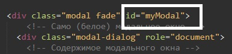
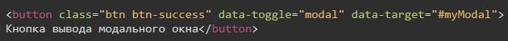
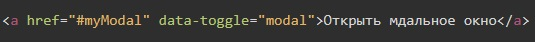

Модальное окно от Bootstrap
Для того что бы работали модальные окна от Bootstrap необходимо подключить библиотеки:
CSS библиотека от bootstrap
<link rel="stylesheet" href="//netdna.bootstrapcdn.com/bootstrap/3.3.2/css/bootstrap.min.css">
Библиотека от JQuery
<script src="http://ajax.googleapis.com/ajax/libs/jquery/1/jquery.min.js"></script>
Библиотека JavaScript от Bootstrap
<script src="//netdna.bootstrapcdn.com/bootstrap/3.3.2/js/bootstrap.min.js"></script>
Теперь в раздел где должно будет появляться окно надо вставить такой код:
<div class="modal fade" >
<!-- Само (белое) модальное окно -->
<div class="modal-dialog" role="document">
<!-- Содержимое модального окна -->
<div class="modal-content">
<!-- Шапка модального окна (кнопка закрыть и заголовок) -->
<div class="modal-header">
<!-- Кнопка закрыть -->
<button type="button" class="close" data-dismiss="modal" aria-label="Close"><span aria-hidden="true">&times;</span></button>
<!-- Подзаголовок -->
<h4 class="modal-title">Modal title</h4>
</div>
<!-- Тело модального окна -->
<div class="modal-body">
<p>One fine body&hellip;</p>
</div>
<!-- подвальная часть модального окна -->
<div class="modal-footer">
<button type="button" class="btn btn-default" data-dismiss="modal">Close</button>
<button type="button" class="btn btn-primary">Save changes</button>
</div>
</div><!-- /.modal-content -->
</div><!-- /.modal-dialog -->
</div><!-- /.modal -->
Теперь как вызвать наше модальное окно?
Допустим у нас есть кнопка которая будет вызывать модальное окно. Первое что надо сделать это присвоить идентификатор блоку с классом "modal fade"

Теперь нашей кнопке надо присвоить два атрибута:
- data-toggle="modal"
- data-target="#id_блока"
Т.е. наша кнопка будет выглядеть вот так:

Теперь при нажатии на кнопку быдет вылезать модальное окно.
В случае если нам необходимо что бы модальное окно вызывала ссылка, то ссылке мы добавляем так же атрибут data-toggle="modal" и в атрибуте href мы указываем решетку и id нашего блока

Может быть такое, что нам необходимо изменять размер модального окна. В этом случае блоку с классом "modal-dialog" мы добавляем класс:
- modal-lg - большое модальное окно
- modal-sm - маленькое модальное окно
Больше информации по модальным окна от Bootastrap читаем ЗДЕСЬ
Содержимое моего модального окна